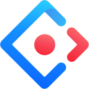

Hakkımda
Analiz, mimari, geliştirme ve canlı ortam işletimini kapsayan 5+ yıllık kurumsal yazılım deneyimine sahip bir full stack geliştiriciyim. Frontend tarafında ağırlıklı olarak React, Angular ve Vue.js, backend tarafında Spring Boot, Node.js ve NestJS kullanıyorum; veri ve altyapıda PostgreSQL, Oracle ve Docker.
Şu anda Phexum'da, dil enstitüleri ve eğitim kurumları için bir EdTech platformu olan JoedTech'i geliştiriyorum. Öncesinde Erdemir (OYAK Maden Metalurji Grubu) için ERP geliştirmeleri, bir lojistik firması için yapay zekâ destekli nakit akışı optimizasyon aracı ve bir NLP SaaS platformu üzerinde çalıştım.
Günlük işimde insan onaylı (human-in-the-loop) inceleme ile agentic geliştirme akışları, MCP tabanlı araç entegrasyonları ve olay güdümlü otomasyonlar kullanıyorum. Göze çok görünmeyen işleri de önemsiyorum: sorgu performansı, canlı ortam sorunları ve uçtan uca testler.
Deneyim
-
Eyl 2022 — Günümüz
Full Stack Yazılım Mühendisi · Phexum A.Ş.
Ataşehir, İstanbul
- JoedTech (EdTech): temel LMS, CRM ve Event Center modülleri. Yapay zekâ kodlama ajanlarını proje kuralları, özel komutlar, alt ajanlar ve korkuluklarla yapılandırdım; log analizi, izleme ve alarm için olay güdümlü ajanlar ve webhook otomasyonları kurdum; veritabanı performansı, canlı ortam sorunları ve tarayıcı tabanlı E2E testlerle ilgilendim.
- Erdemir ERP: iş ortağı VBT A.Ş. üzerinden ERP geliştirmelerinde danışman full stack mühendis.
- Alışan Lojistik: yapay zekâ destekli nakit akışı ve finansal planlama aracı.
- Phexum NLP Platformu: hexagonal mimari, stateless servisler, Redis ve Docker ile Spring Boot, Vue.js ve PostgreSQL üzerinde SaaS.
- Şirket web sitesi, MongoDB Cloner ve BöceKanban.
-
Tem 2021 — Eyl 2022
Full Stack Yazılım Mühendisi · VBT A.Ş.
Ataşehir, İstanbul
- VBT'nin referanslarından Erdemir'de (OYAK Maden Metalurji Grubu) full stack mühendis.
- VBT'nin iştiraki Phexum A.Ş.'de full stack mühendislik danışmanı.
-
Ağu 2017 — Nis 2018
Yazılım Geliştirici · Univap
Kadıköy, İstanbul
Structured Text (Pascal benzeri) ile PLC programlama.
-
Tem — Eyl 2016
Stajyer · Elmak
Kocaeli, Türkiye
WinCC OA ile ANSI C, WinCC ile VB.
Projeler
-
2024 — Günümüz
JoedTech
Dil enstitülerinin ve okulların kullandığı araçları tek çatı altında toplayan entegre bir platform. LMS, CRM ve JAM Event Center modüllerini React, Ant Design ve Tailwind ile uçtan uca geliştirdim; backend mimarisine ve entegrasyonlara katkı verdim; müşteri gereksinimlerini ve planlamadan canlıya teslimatı yönettim.
-
2022 — 2025
Üretim Planlama · Erdemir
Üretim Planlama departmanının yönetim ve akış ekranlarının analizi, dokümantasyonu ve full stack geliştirmesi. Frontend'de NgRx (actions, store, reducers, effects, selectors) ile Angular, backend'de Spring Boot.
-
Ar-Ge
Yapay Zekâ Destekli Nakit Akışı ve Finansal Planlama · Alışan Lojistik
Bir lojistik firmasının iş ortakları ve tedarikçileriyle olan nakit akışını optimize eder ve modelin çıktısıyla tedarikçi firmaları puanlar. Model eğitimi Konya Teknik Üniversitesi ile birlikte yapıldı; ben frontend tarafında çalıştım.
-
SaaS
Phexum NLP Platformu
4 kişilik bir ekiple SaaS ürünü olarak sunulan Türkçe NLP platformu. Hexagonal mimari ve dependency injection ile Java 11 / Spring Boot, yük dengeleme için durumu Redis üzerinden paylaşan stateless instance'lar, Vue.js + Vuex frontend, JPA ile PostgreSQL ve Docker üzerinde dağıtım.
-
Açık kaynak
MongoDB Cloner
MongoDB veritabanlarını sunucular arasında yedeklemek ve taşımak için ücretsiz, açık kaynak bir araç. Pre-prod ve test ortamları arasında veri karmaşası yaşayan geliştiriciler için yapıldı.
-
Açık kaynak
BöceKanban
Jira ve Trello'ya alternatif olarak 5 kişilik bir ekiple geliştirilen proje yönetim uygulaması. Katmanlı mimaride Spring Boot backend, Vue.js + Vuex frontend, JPA ile PostgreSQL ve Docker üzerinde dağıtım.
Yetenekler
Diller
 Java
Java TypeScript
TypeScript JavaScript
JavaScript HTML
HTML CSS
CSS C#
C# MATLAB
MATLAB- PLC
Frontend
 React
React Angular
Angular Vue.js
Vue.js Tailwind
Tailwind Bootstrap
Bootstrap
Ant Design
Backend
 Spring Boot
Spring Boot Node.js
Node.js NestJS
NestJS TypeORM
TypeORM- JPA
- REST API
 Maven
Maven RabbitMQ
RabbitMQ- Hexagonal Mimari
Veritabanları
 PostgreSQL
PostgreSQL- Oracle
 MongoDB
MongoDB Redis
Redis
Yapay zekâ ve agentic geliştirme
- Agentic iş akışları
- Model Context Protocol (MCP)
- Alt ajanlar
- Human-in-the-loop
- Olay güdümlü ajanlar
- İş akışı otomasyonu
- Computer use ve tarayıcı ajanları
- Sandbox içinde ajan çalıştırma
- E2E test otomasyonu
DevOps, araçlar ve süreç
 Docker
Docker GitHub Actions
GitHub Actions Git
Git Jira
Jira- Scrum
 Postman
Postman Swagger UI
Swagger UI- TablePlus
 Figma
Figma
Eğitim
-
2018 — 2021
Sakarya Üniversitesi
Lisans, Elektrik-Elektronik Mühendisliği
Bitirme tezi: Dijital Kontrolör Tasarım Platformu
-
2015 — 2017
Marmara Üniversitesi
Ön lisans, Yönetim Bilişim Sistemleri
Sertifikalar ve Referanslar
-
Sertifika
ISO 9001:2015 Kalite Yönetim Sistemi Eğitimi
-
Sertifika
KVKK Eğitimi
-
Referans
Bektaş Aydın
Kurumsal Mimar, Ford Otosan
-
Referans
Muhammed Zahid Yeter
Robotik Mühendisi, Amazon